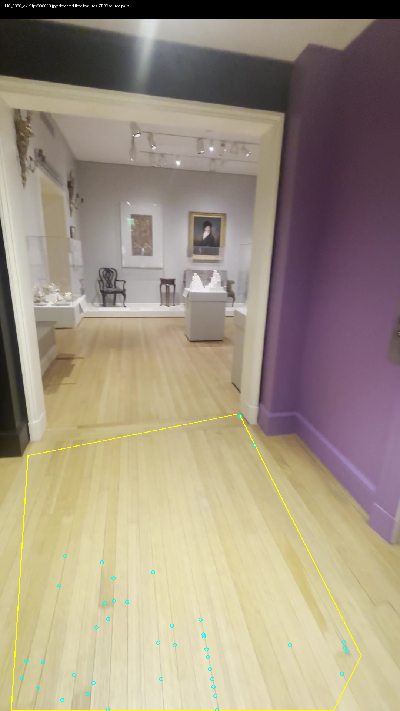
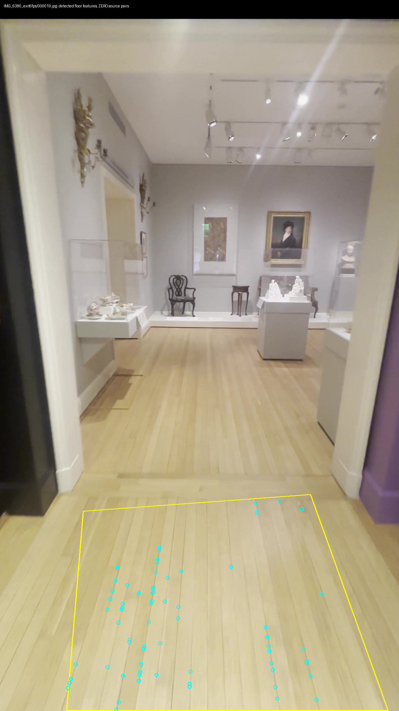
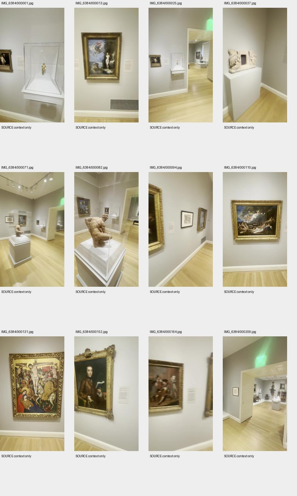
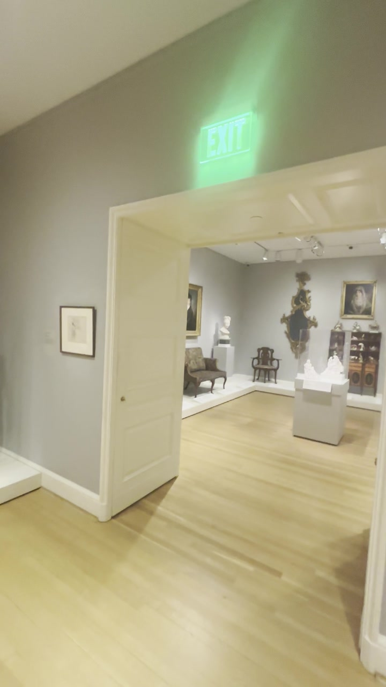
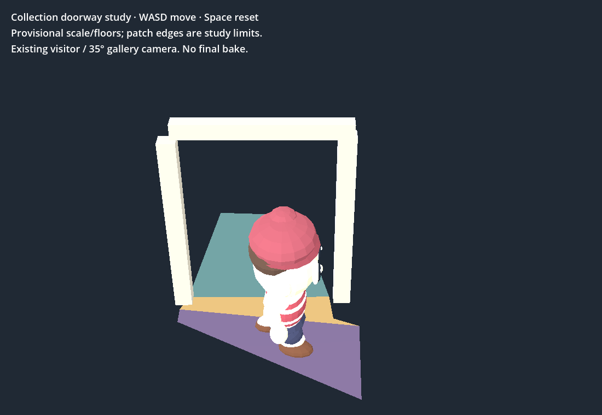

2026-09-30 16:30 UTC · prototype evidence · $0 spent
Native feature extraction detects 54/91 floor features, but none matches inside both frozen source masks. No new floor triangle, scale or collision accepted. Original anchors have no cross-clip tracks; supplemental source views are the next measurement evidence.
All 24 native and 24 Chrome bounded-walk checks plus real WASD round trip pass. Shell has eight previously observed failures. Viewer unchanged; connected museum incomplete.
Checkpoint and next action · Run historical bounded walk (WASD / Space) · Coverage and runnable checks · Hashes/provenance




